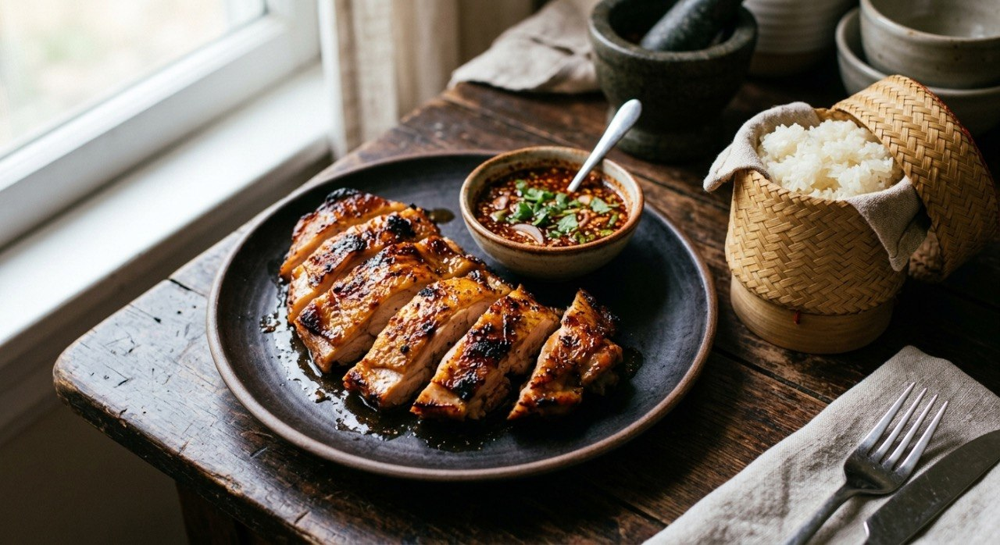

Chicken marinated in the oyster-soy-garlic house blend, grilled over charcoal, and eaten with jaew — the smoky, roasted-rice chilli dip.

ไก่ย่าง is the third leg of the Isaan trio — som tum, sticky rice and grilled chicken — and the sources agree on its architecture even when they argue over the details. The chicken is marinated in an oyster-soy base sweetened lightly, laced with garlic, and grilled over charcoal. The Cookpad recipe's instruction is the plainest statement of the tradition: "grill over charcoal or bake at 350°F until golden."
What separates it from any other grilled bird is the น้ำจิ้มแจ่ว, jaew — the dip built on ข้าวคั่ว, roasted rice powder, which no other Thai dip carries in the same way. Toasted, pounded rice gives jaew its grain-and-smoke body; fish sauce, lime and chilli give it the bite; shallots and sawtooth coriander finish it. The Wongnai UGC recipe's tip is the table habit: "serve with sticky rice and som tum."
The sources also split on the marinade's aromatics: the Wongnai main recipe pounds the classic สามเกลอ — coriander root, garlic and pepper — while the Wongnai home-cook version roasts whole coriander seeds and pounds them with garlic and pepper instead. Both are the same idea from different directions: the spice mix must be fresh and pounded, never ready-made powder.
| Thai | English | Amount |
|---|---|---|
| น่องไก่ติดสะโพก | Chicken legs (drumstick + thigh) | 700 g |
| ซอสหอยนางรม | Oyster sauce | 1½ tbsp |
| ซีอิ๊วขาว | White soy sauce | 1½ tsp |
| เกลือป่นหยาบ | Coarse salt | 1½ tsp |
| น้ำตาลทราย | Sugar | 2 tsp |
| กระเทียมบุบหยาบ | Garlic, crushed | 1 tbsp |
| พริกไทยบุบหยาบ | Pepper, crushed | 1½ tsp |
The jaew (per the TrueID proportions): 2 tbsp lime juice, 2 tbsp fish sauce, 1 tsp sugar, chilli powder to taste, 1 tbsp roasted rice powder, sliced shallot, spring onion and sawtooth coriander.
Variations: the Wongnai UGC version sweetens the marinade with palm sugar, dark soy and 4 tbsp of evaporated milk for a lacquered skin, and builds its jaew on tamarind with kaffir-lime slivers.
The heat. Cookpad grills over charcoal; the Wongnai main and TrueID recipes are air-fryer versions; the UGC recipe bakes at 250°C on a rack. The sources agree the dish is grilled — they disagree on which appliance the home cook owns.
The marinade's sweetener. Cookpad and TrueID use plain sugar; the Wongnai main recipe relies on seasoning powder; the UGC version layers palm sugar, dark soy and evaporated milk for a lacquered, glossy skin. Three shops, three finishes.
The pounded spice mix. Wongnai main pounds สามเกลอ — coriander root, garlic, pepper. The UGC recipe roasts coriander seeds first and pounds those. Both insist the mix must be fresh, never ready powder.
The jaew. Most sources build it on lime; the UGC version starts from tamarind and adds kaffir-lime slivers — the Lao-leaning jaew. The Cookpad version is a big batch (1 cup each of fish sauce and lime) for a stall; the others are single-serve proportions.
Crisp skin. Three tricks, all different: Wongnai main brushes oil on mid-cook; TrueID pricks the skin before cooking; the UGC version racks the thighs skin-up and relies on the dark-soy lacquer. None agree, all work.
This recipe is translated from the following Thai-language sources. Where they disagree, we've said so.
1. Cookpad (moonim naenny) — "สูตร ไก่ย่าง+น้ำจิ้มแจ่ว" (the marinade used here, charcoal method) — cookpad.com
2. TrueID (เพจทำเองอร่อยจัง) — "สูตรทำ ไก่ย่าง หม้อทอดไร้น้ำมัน พร้อมน้ำจิ้มแจ่ว" (the air-fryer method + the jaew proportions used here) — food.trueid.net
3. Wongnai — "วิธีทำ 'ไก่ย่างจิ้มแจ่ว' เมนูไก่เนื้อนุ่มหนังสวย" (the สามเกลอ marinade + oil-brush crisp trick) — wongnai.com
4. Wongnai UGC (GopOpOp) — "สูตร ไก่ย่างจิ้มแจ่ว" (the palm-sugar/evaporated-milk lacquer + tamarind-kaffir jaew) — wongnai.com